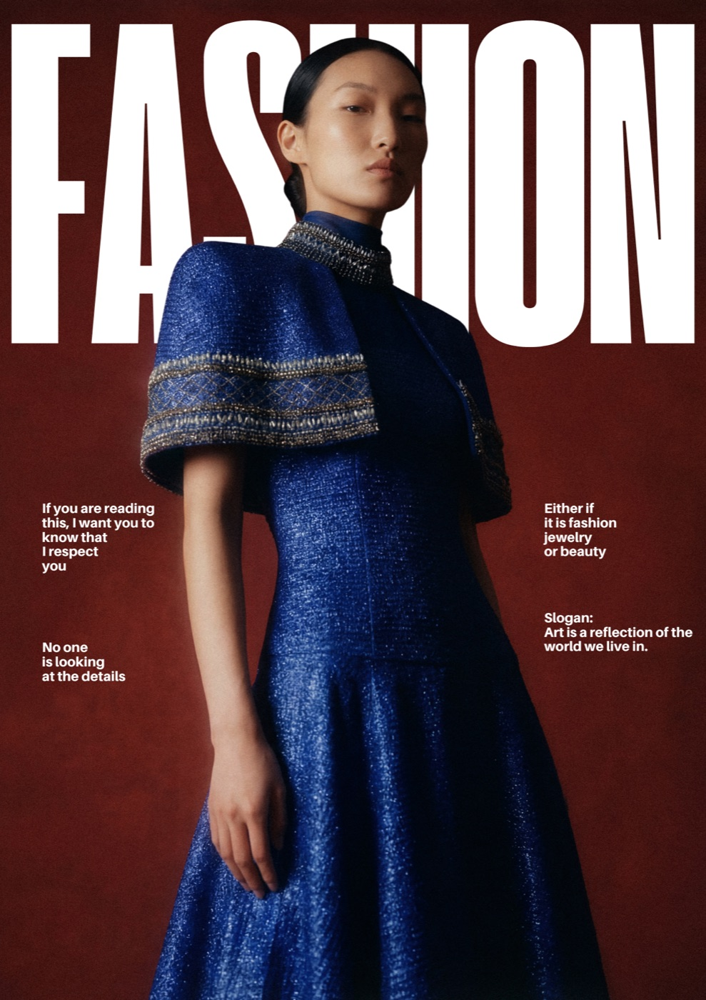
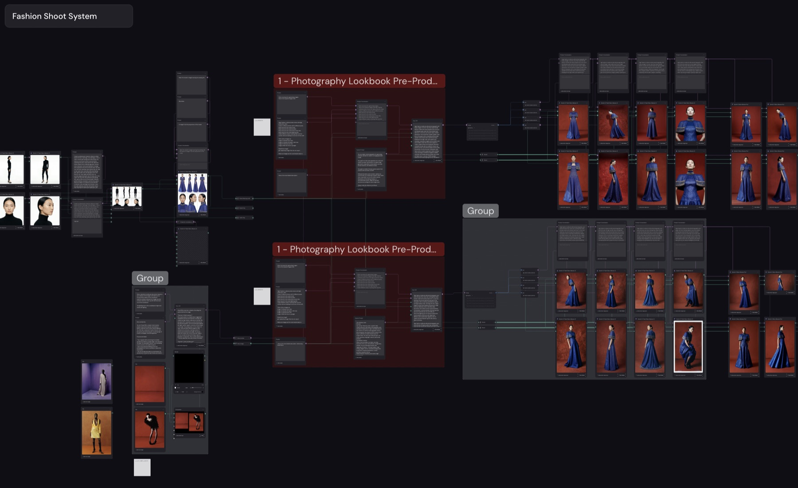
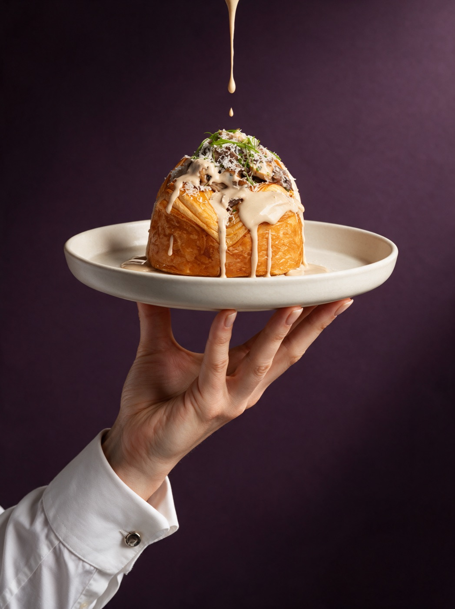

أنظمة توليد صور قابلة للأتمتة مع تحكم إبداعي كامل. راح نشرح أداة Figma Weave الرائدة في تقديم حلول بناء سير العمل الإبداعي لإنتاج الصور. بث مباشر مجاني لمدة ٩٠ دقيقة، غير مسجّل. الأحد ١٦ أغسطس، ٧:٣٠ مساءً بتوقيت جدة.
·

الإنتاج الإبداعي بالذكاء الاصطناعي اليوم بيشهد طلب متزايد لدرجة أن الطلب أعلى من عدد المبدعين اللي بيقدموا الخدمة هذي.
عشان كدا حبيت أشارك معاك بعض من هذي المهارات لعلها تفيدك. وبشكل مجاني تماماً.
جولة سريعة على المشهد اليوم: وش الموجود، وش يسوي كل نوع، وفين مكانه، قبل ما نركّز على أداة وحدة.
نبدأ من الصفر: وش هي Figma Weave، ايش استخداماتها، وليش تختلف عن أي أداة جربتها قبل.
اللغة اللي تتكلم فيها مع الأداة. كيف تكتب، وكيف تتحكم، وكيف تخلي الوصف يطلع اللي في راسك بالضبط.
الأدوات اللي تنتج الصورة، وكيف تختار الصح منها لكل نوع شغل.
هنا يبدأ الفرق: كيف تاخذ الصورة وتطوّعها. تعدّل، تدمج، وتوصل للنتيجة اللي في بالك.
نفس المنطق، بس متحرك.
التحكم الكامل في الحركة والمشهد.
كل اللي فوق أدوات، والأدوات وحدها ما تكفي. اللي يفرق هو النظام اللي يربطها ببعض. هنا نوقف عند أهم جزء في الجلسة: كيف تبني سير عمل يشتغل معك كل مرة، بدل ما تبدأ من الصفر كل ما فتحت الأداة.
نختم بأسئلتكم المباشرة، نجمعها للآخر عشان ما نقطع التسلسل.


ماجد عنقاوي مصوّر ومدير إبداعي ومعلّم ورائد أعمال سعودي من جدة. بدأ رحلته بالتصوير كحرفة وكوسيلة سرد وتعبير ثقافي، واشتغل على مدى ١٦ سنة في الأزياء والإعلانات والاستشارات الإبداعية، وتعاون مع برندات عالمية مثل Dior و Gucci و Graff و Chaumet.
وعلى مدى السنوات، درّب ووجّه مصوّرين ومبدعين صاعدين في السعودية والخليج من خلال ورش وبرامج تعليمية تجمع بين إتقان الحرفة والنمو الفني والمهني، وتعاون مع Art Jameel و SUNONO في إصدار كتب ومطبوعات فوتوغرافية.
أسّس MA Studio و MA Learn، وفيهما يجمع بين عينه الإبداعية وخبرته كصاحب أعمال: يساعد المبدعين يبنون من موهبتهم قيمة حقيقية وشغل مستدام. وهو سفير Fujifilm في السعودية.
واليوم تركيزه كله على الذكاء الاصطناعي الإبداعي. نفس المعادلة اللي بتتعلمها في الورشة هي اللي يستخدمها ماجد فعلياً في مشاريعه وشغل عملائه.


سجّل بياناتك ونثبّت لك مقعدك. وجهز حماسك و إبداعك و أسئلتك.
وصلك إيميل تأكيد فيه كل التفاصيل.
رابط الدخول للماستركلاس بنرسله في قناة الواتساب فقط. إذا ما انضميت للقناة، ما راح يوصلك الرابط وما راح تقدر تحضر.
٧:٣٠ مساءً بتوقيت جدة·٩٠ دقيقة
ما فيه تسجيل ينرسل بعد الجلسة، فاللي تشوفه معنا مباشرة هو اللي تطلع فيه.